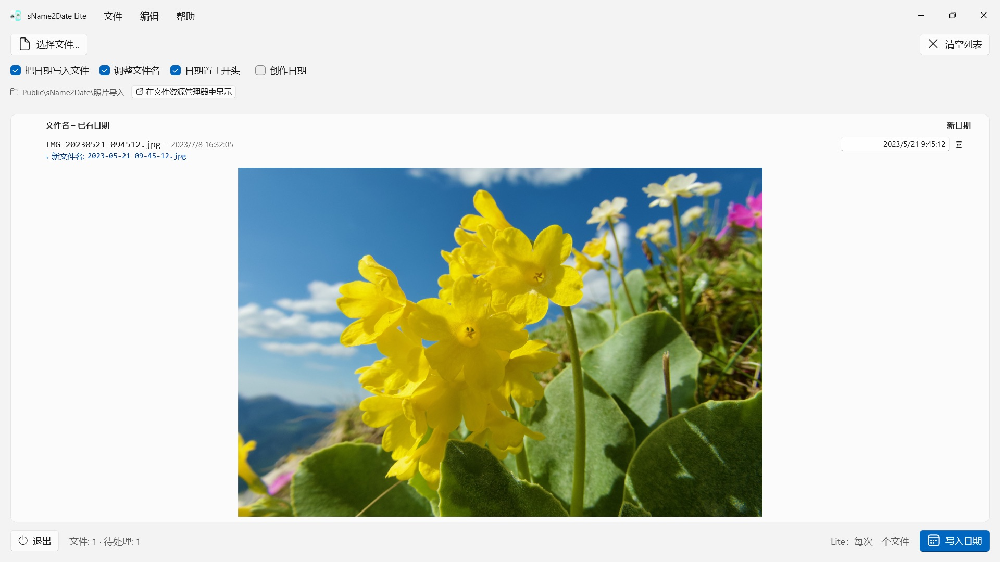
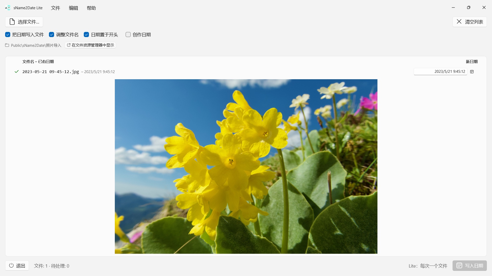

从文件名中读出日期，作为拍摄日期写入一张照片或一段影片——让照片管理软件和文件资源管理器正确排序。每次一个文件，免费，一切都可以用 Ctrl+Z 撤销。


很多照片和影片的日期就写在文件名里，录音和 PDF 等文档也是如此——却不在程序查找它的地方。从聊天软件、扫描仪或旧存档接手的一张图片，文件名常是 IMG_20240115_103000.jpg、假期 15.01.2024.jpg 或 发票 23112024.pdf，在任何照片管理软件和文件资源管理器里都显示为今天的日期。
sName2Date 从文件名中读出日期，并把它作为拍摄日期写入文件。文件中还没有拍摄日期时，就新建一个。对于 PDF 等没有拍摄日期的文件，App 会设置文件的创建日期和修改日期。 此版本每次处理一个文件，而对这个文件可以做全部的事。
25 种语言：英语、德语、捷克语、克罗地亚语、荷兰语、芬兰语、法语、匈牙利语、意大利语、日语、韩语、书面挪威语、波斯语、波兰语、葡萄牙语（巴西和葡萄牙）、罗马尼亚语、俄语、西班牙语、瑞典语、泰语、土耳其语、乌克兰语、中文（简体和繁体）。App 跟随 Windows 的显示语言。
可识别的写法
常见的日期和时间写法，其中包括：
- 2024-01-15 10-30-00
- IMG_20240115_103000
- IMG-20240115-WA0001
- 2024-01-15 · 2024 01 15 · 2024_01_15
- 15.01.2024 · 15-01-2024 · 15.01.24 · 15012024
- 15 Jan. 2024 · January 15 2024
- 2016 04 · 04-2016 —— 只有年和月
写成文字的月份名称，App 会按 App 的语言和英文来读，长写法和缩写都认得。中文里的月份写作 1月，不是由字母组成的词，无法作为月份名称识别——中文文件名请用上面的数字写法。
名称里只有日期时，会假定一个时间，几点由你决定。连日也缺少时，取当月的第一天——这一点会写在该行上。名称里有多个日期时，第一个为准。日和月可以互换的地方，由你决定——默认值来自 Windows 的区域格式，受影响的文件会专门标出来，而不是悄悄猜。
名称里根本没有日期时，可以在该行右侧自己填。可填的范围一直回溯到 1826 年，也就是现存最早照片的年份——19 世纪扫描进来的照片，和昨天拍的一样可以标注日期。
会改动什么
写入的是 EXIF DateTimeOriginal 和 DateTimeDigitized 以及 TIFF DateTime，影片和录音则是容器里的创建日期。需要的话，也一并设置文件本身的创建日期和修改日期。
图像数据原封不动：JPEG 不会重新压缩，影片不会重新编码。对影片和录音，App 通常只改动容器里的几个字节，而不是整个重写——再大的影片也是一瞬间就好。写入之后，App 会把日期读回来核对；该行的颜色会告诉你日期落在了哪里。
拍摄日期写进文件本身的格式有 JPEG、TIFF 和 HEIC（需要 Microsoft 的 HEIF 图像扩展），影片格式 MP4、MOV 和 M4V，以及音频格式 M4A 和 M4B。PNG、GIF、WebP、AVI 和 RAW 照片会在旁边得到一个 XMP 附属文件，许多照片程序都会一并读取——该行会显示蓝色对勾。
无法容纳拍摄日期的文件也能处理
PDF、文本文件、表格根本没有放拍摄日期的字段——但它们照样会进入列表。App 在这些文件上设置文件本身的创建日期和修改日期，那是这个日期唯一能落到的地方；该行会用橙色对勾而不是绿色对勾来表示。所以这里不看扩展名——PDF、文本、表格、压缩包，全都行。
如果压根不想让文件被碰到，就把窗口上方的「把日期写入文件」勾去掉；这时 App 只调整文件名。
名称也一并整理
需要的话，App 会在同一次操作中把文件名也改成 ISO 写法：假期 15.01.2024.jpg 变成 2024-01-15 12-00-00 假期.jpg。名称和拍摄日期从此说的是同一件事。
一切都可以撤销
一次操作可以用 Ctrl+Z 完整撤销——拍摄日期、文件时间戳，以及改过的文件名。Ctrl+Y 再做一遍。
一次处理更多：完整版 sName2Date
完整版 sName2Date 处理的不是单个文件，而是整个文件夹：它会载入文件夹，需要时连同全部子文件夹，为每个文件显示找到的日期，并一次性写入整批——哪怕是一趟旅行的上千张照片。已经有拍摄日期的文件，可以按需跳过。
如果只有一个文件，眼下这个版本就够用了。
在你的 PC 上，也仅在那里
没有账户，没有云，没有分析，没有广告。App 只访问你交给它的文件。每种语言都配有完整的帮助文档。
- 需要 Windows 11 或更高版本
- 支持 24 种语言
- 技术支持： SwiftAppsBavaria@gmx.net
- sName2Date 隐私政策